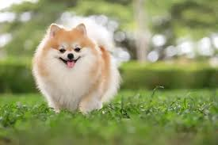
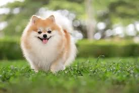

Tekan gambar untuk melihat tingkah lucu mereka
Kucing dan anjing merupakan hewan berkaki empat. Kucing dan Anjing
merupakan hewan mamalia. Ciri-ciri dari mereka yaitu memiliki cakar,
berbulu lembut dan mata yang cenderung besar, untuk Anjing memiliki
bentuk yang beragam ada yang besar dan juga kecil. Biasanya mereka
yang jinak dan juga menggemaskan.